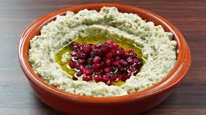
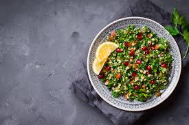
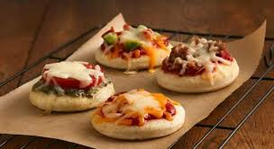

ساندويشات
المكونات:
- خبز تورتيلا
- دجاج مشوي أو شرائح لحم
- خس، طماطم، خيار
- مايونيز أو صوص خردل
- جبن موتزاريلا
الخطوات:
- ضع شرائح الدجاج أو اللحم في خبز التورتيلا.
- أضف الخضار والصوص.
- لف الساندويش وقدمه مع مشروب بارد.
متبل الباذنجان

المكونات:
- 1 باذنجانة كبيرة
- 2 ملعقة كبيرة طحينة
- 1 فص ثوم مفروم
- عصير ليمونة
- ملح وفلفل أسود حسب الذوق
- زيت زيتون للتقديم
- رشة من البابريكا
الخطوات:
- شوي الباذنجانة على النار أو في الفرن حتى تصبح ناعمة وقابلة للتقشير.
- قشر الباذنجانة واهرسها جيدًا باستخدام شوكة أو محضر الطعام.
- أضف الطحينة، الثوم، عصير الليمون، الملح والفلفل وامزج جيدًا.
- قدمه في طبق تقديم مع زيت الزيتون ورشة من البابريكا.
تبولة

المكونات:
- 1 كوب برغل ناعم
- 2 حبة طماطم مفرومة
- نصف كوب بقدونس مفروم
- 1 بصلة صغيرة مفرومة
- عصير ليمونة
- زيت زيتون وملح حسب الذوق
الخطوات:
- نقع البرغل في الماء الساخن لمدة 10 دقائق ثم تصفيته.
- اخلط البرغل مع الخضار والبقدونس في وعاء كبير.
- أضف زيت الزيتون والليمون والملح ثم قلب جيداً.
ميني بيتزا

المكونات:
- عجينة بيتزا جاهزة أو محضرة في المنزل
- صلصة طماطم
- جبن موزاريلا
- زيتون أسود مقطع
- شرائح فلفل رومي
الخطوات:
- افرد العجينة على صينية الخبز.
- ضع طبقة من صلصة الطماطم ثم الجبن والزيتون والفلفل.
- اخبز في الفرن على حرارة 200 درجة مئوية لمدة 10-15 دقيقة.